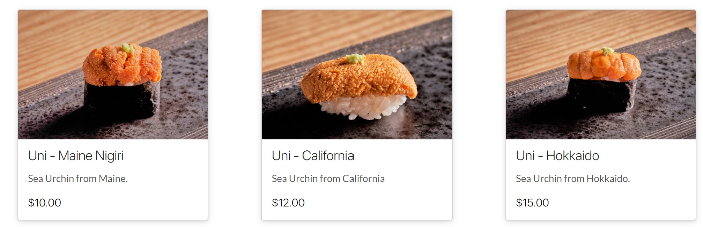

Sea urchin, or Uni in Japanese, is always a popular sushi topping in Japan. This golden delicacy tastes creamy and sweet, with a hint of saltiness. Every time I go to a sushi restaurant in Japan, I definitely order uni nigiri.
Sea urchins appear tough on the outside, but they are extremely delicate on the inside. You can find them in all of the world’s oceans but they are difficult to harvest. To eat the edible roe inside, you must crack the hard shell and carefully remove the meat. The meat should not be frozen to maintain its creamy consistency.
Many sushi restaurants here in New York City serve uni with a hefty price tag. Some use imported lucrative uni from Hokkaido, Japan, which naturally costs a lot of money. But some use domestically landed uni as a topping.
For example, Sushi Ishikawa, an omakase-only sushi bar on the Upper East Side, offers three types of uni nigiri on its takeout menu. Bite-sized nigiri with Maine’s uni costs $10, and nigiri with Californian uni costs $12. Surely not affordable, but still, you can save money by not choosing $15 nigiri with imported uni.
From Sushi Ishikawa's takeout menu
Although uni might seem like exotic sea creatures, there are certainly domestic uni landings in the United States. So, where is the best place to find good uni?
I search the data from National Oceanic and Atmospheric Administration(NOAA) to see which state produce the most uni.
As you can see in the chart above, California produces more than a 7.5million lbs of uni, followed by Maine. According to the California Sea Urchin Commission, kelp forests on the California Coast provide a rich food source for sea urchins, which enhance their tastes. California might be the best place to find fresh and umami-rich uni in the US.
Analyzing the Californian data more closely, however, the concern over the sustainability of sea urchins in the region becomes apparent.
According to the Red Sea Urchins Enhance Report 2020 published by the California Department of Fish and Wildlife, the sea urchin landings in the state plunged after 2013. It showed a nearly 40% decrease from the previous year in 2014, and the landing has never recovered since. As a result, the typical ex-vessel price, the amount fishers receive directly for their catch, has increased accordingly.
Kelp forest and sardines, San Clemente Island, Channel Islands, California: link, CC BY-SA 2.5, via Wikimedia Commons
What made sea urchin fishing so difficult? Researchers point out that climate change is one major factor. Due to climate change and El Niño weather events, ocean temperatures surged from 2014 to 2016, resulting in the lowest landing in history in 2018.
Ironically, this deterioration of the ocean environment led to the population boom of purple sea urchins, which are generally inedible (Unlike red sea urchins, purple ones produce little meat inside the shell). As purple sea urchins flourished, kelp forests were destroyed, making the ocean environment tougher for red sea urchins to thrive in. Now local restaurants in California, including sushi bars and fine dining, had trouble finding uni locally because of the catch problem.
purple sea urchins, Kirt L. Onthank, CC BY 3.0, via Wikimedia Commons
{kind=link}
{kind=link}